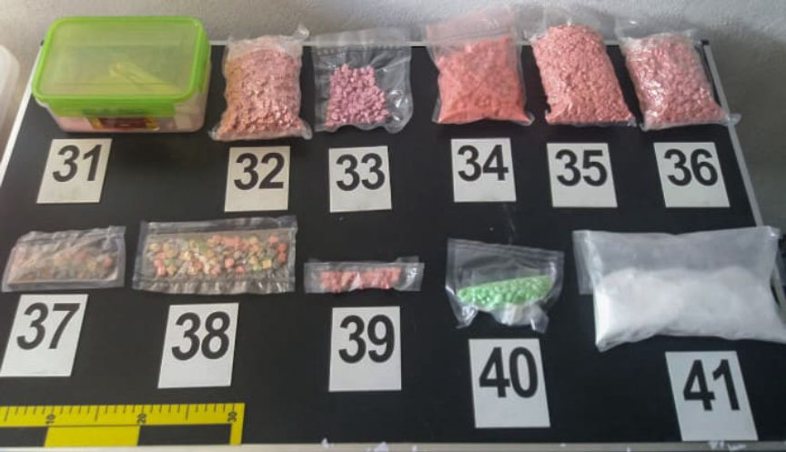
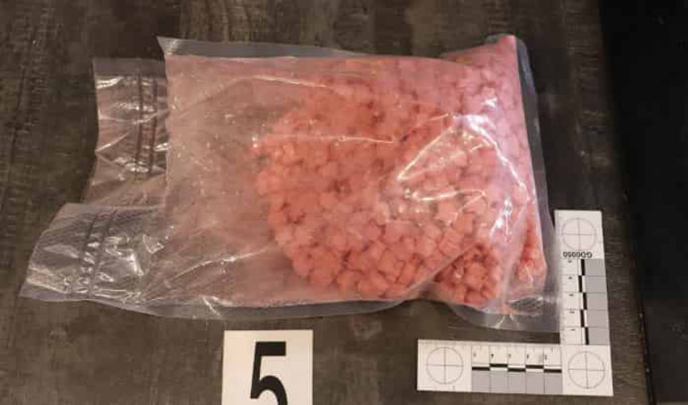
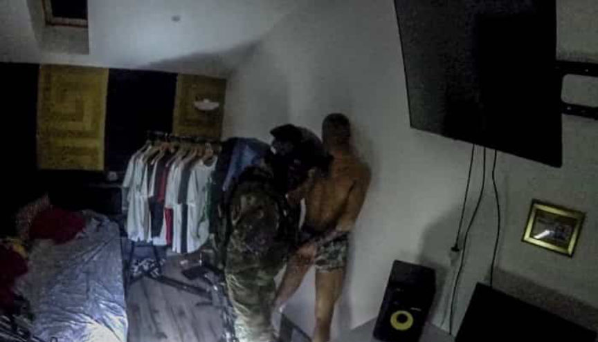
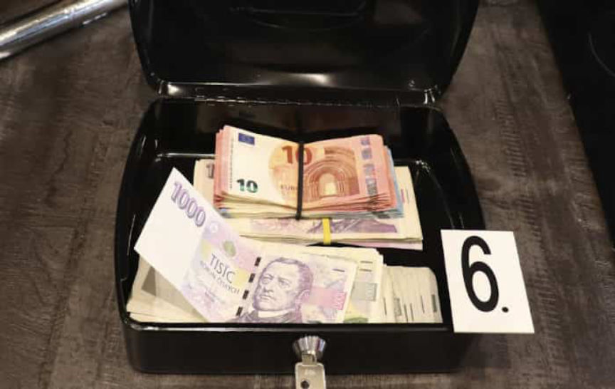
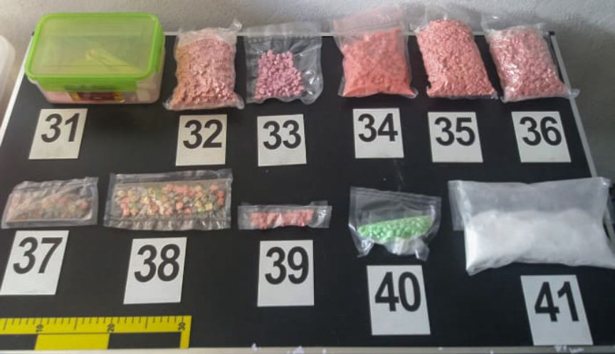
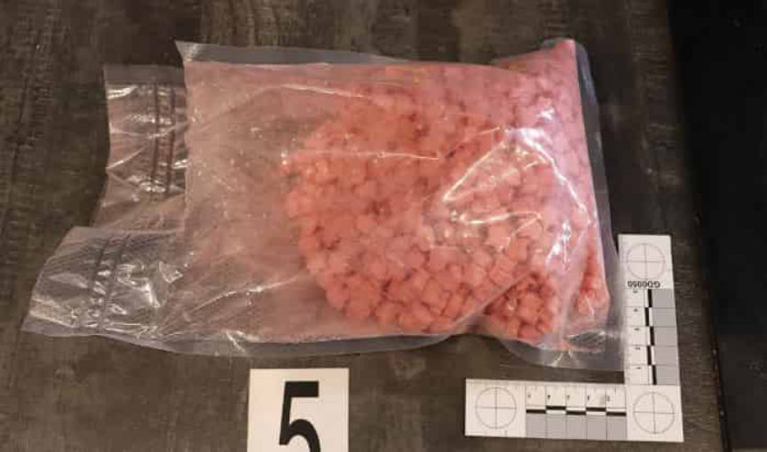
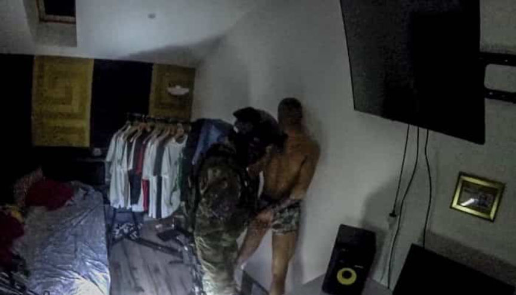
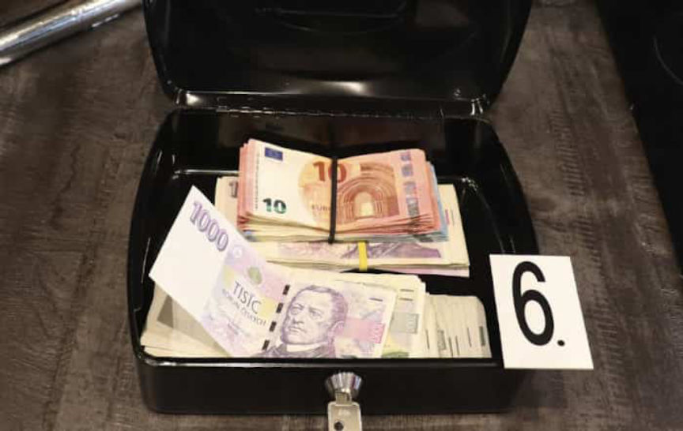

Customs Busted a Darkweb Drug Ring in the Czech Republic
~3 min read | Published on 2019-12-06, tagged Arrested, Darkweb-Vendor, Drug-Bust, Drugs using 749 words.
Law enforcement in the Czech Republic arrested five individuals for running an international drug trafficking ring out of Brno. The group allegedly orchestrated the shipment of kilograms of ecstasy pills, cocaine, and methamphetamine into the United States, Australia, and elsewhere.
Five residents of Brno, Czech Republic, allegedly sold hundreds of thousands of dollars worth of illegal substances on the darkweb. The total value of the drugs distributed by the group remains unknown; the suspects refused to disclose the passwords needed to access their cryptocurrency wallets and investigators have been unable to access the wallets without the necessary decryption keys.
The Investigation
Customs officers in Prague intercepted a package containing 4.2 kilograms of MDMA in April 2019. Reports from the media indicated that Customs lucked out on the seizure. Investigators watched security footage from cameras at the post office in an attempt to identify the person responsible for dropping off the package. The suspect who had dropped the package off at the post office appeared in the video long enough for the investigators to obtain his identity. Instead of arresting the identified suspect, they placed him under surveillance.
Investigators with a special Customs task force reintroduced the seized package into the mail stream and coordinated with the United States Drug Enforcement Administration. Authorities in the U.S. arrested the recipient of the MDMA package once the package had landed in the U.S.
During the course of the investigation, law enforcement learned that the group had been selling drugs on the darkweb for more than two years. They operated out of two garages in Brno. The garages functioned as warehouses for the group’s large stash of substances as well as a packing station where the conspirators would prepare drugs for shipment to customers across the globe.
Selling on the Darkweb
Investigators are still learning about the operation and the investigation is expected to continue until early 2020. By the end of the investigation, law enforcement will have spent almost a year on the case. So far, though, they know the group sold on the darkweb and had a “pretty wide assortment” of products. The group primarily sold methamphetamine, MDMA, cocaine, and LSD, according to law enforcement officials working on the case.
The dealers shipped drugs concealed inside ordinary housewares, such as an electric kettle and a bread baking machine. They also hid drugs inside puzzle boxes.
Customs learned that the group purchased drugs in bulk from sources in the Netherlands and often had multiple drug couriers physically transport the bulk product from the Netherlands to Brno. Law enforcement officials told the press that the leader of the group had once threatened one of the drug mules by claiming he would cut the courier’s head off if the shipment from the Netherlands “fell through.”
Towards the end of the investigation, the group had suspicions about a possible investigation or law enforcement action in the Czech Republic that would result in undelivered packages or arrests. So they stopped using post offices in the Czech Republic. They started shipping their packages from post offices in Austria. They switched far too late, though; not long after they made the switch to the Austrian post, Customs in the Czech Republic ended their physical surveillance and planned a raid.
Arrests
In September 2019, Customs raided the houses and warehouses owned by the group. One of the suspects lived in a $1.2 million dollar home. During the raids, law enforcement seized almost 10,000 ecstasy pills, 1.3 kilograms of cocaine, seven kilograms of MDMA, and 200 grams of assorted stimulants. They seized half a million crowns (about $21,650), a Škoda Octavia, and an Audi.
The Octavia belonged to the oldest member of the group—the 23-year-old leader. He had purchased the car after failing to purchase a Brabus Built Mercedes at a car show with only cash. The youngest member of the group, a high-school student, also lived well. He considered the drug trafficking operation part of his independence as a young adult, one new outlet reported.
All five face between 10 and 18 years in prison. Sentences will likely be less than the maximum due to the young age of all five suspects. Since authorities are currently unable to access the cryptocurrency wallets, the dealers might have access to their earnings after completing their prison sentence.
Credit goes to an anonymous reader for the tip on this story.
Five residents of Brno, Czech Republic, allegedly sold hundreds of thousands of dollars worth of illegal substances on the darkweb. The total value of the drugs distributed by the group remains unknown; the suspects refused to disclose the passwords needed to access their cryptocurrency wallets and investigators have been unable to access the wallets without the necessary decryption keys.
A Display of Drugs Seized During the Raid | Customs
The Investigation
Customs officers in Prague intercepted a package containing 4.2 kilograms of MDMA in April 2019. Reports from the media indicated that Customs lucked out on the seizure. Investigators watched security footage from cameras at the post office in an attempt to identify the person responsible for dropping off the package. The suspect who had dropped the package off at the post office appeared in the video long enough for the investigators to obtain his identity. Instead of arresting the identified suspect, they placed him under surveillance.
Ecstasy Pills Seized During the Raid | Customs
Investigators with a special Customs task force reintroduced the seized package into the mail stream and coordinated with the United States Drug Enforcement Administration. Authorities in the U.S. arrested the recipient of the MDMA package once the package had landed in the U.S.
During the course of the investigation, law enforcement learned that the group had been selling drugs on the darkweb for more than two years. They operated out of two garages in Brno. The garages functioned as warehouses for the group’s large stash of substances as well as a packing station where the conspirators would prepare drugs for shipment to customers across the globe.
Selling on the Darkweb
Investigators are still learning about the operation and the investigation is expected to continue until early 2020. By the end of the investigation, law enforcement will have spent almost a year on the case. So far, though, they know the group sold on the darkweb and had a “pretty wide assortment” of products. The group primarily sold methamphetamine, MDMA, cocaine, and LSD, according to law enforcement officials working on the case.
The dealers shipped drugs concealed inside ordinary housewares, such as an electric kettle and a bread baking machine. They also hid drugs inside puzzle boxes.
Customs learned that the group purchased drugs in bulk from sources in the Netherlands and often had multiple drug couriers physically transport the bulk product from the Netherlands to Brno. Law enforcement officials told the press that the leader of the group had once threatened one of the drug mules by claiming he would cut the courier’s head off if the shipment from the Netherlands “fell through.”
Towards the end of the investigation, the group had suspicions about a possible investigation or law enforcement action in the Czech Republic that would result in undelivered packages or arrests. So they stopped using post offices in the Czech Republic. They started shipping their packages from post offices in Austria. They switched far too late, though; not long after they made the switch to the Austrian post, Customs in the Czech Republic ended their physical surveillance and planned a raid.
Arrests
In September 2019, Customs raided the houses and warehouses owned by the group. One of the suspects lived in a $1.2 million dollar home. During the raids, law enforcement seized almost 10,000 ecstasy pills, 1.3 kilograms of cocaine, seven kilograms of MDMA, and 200 grams of assorted stimulants. They seized half a million crowns (about $21,650), a Škoda Octavia, and an Audi.
A Frame from a Video of the Raid | Customs
The Octavia belonged to the oldest member of the group—the 23-year-old leader. He had purchased the car after failing to purchase a Brabus Built Mercedes at a car show with only cash. The youngest member of the group, a high-school student, also lived well. He considered the drug trafficking operation part of his independence as a young adult, one new outlet reported.
Cash Seized from the Home of a Suspect | Customs
All five face between 10 and 18 years in prison. Sentences will likely be less than the maximum due to the young age of all five suspects. Since authorities are currently unable to access the cryptocurrency wallets, the dealers might have access to their earnings after completing their prison sentence.
Credit goes to an anonymous reader for the tip on this story.